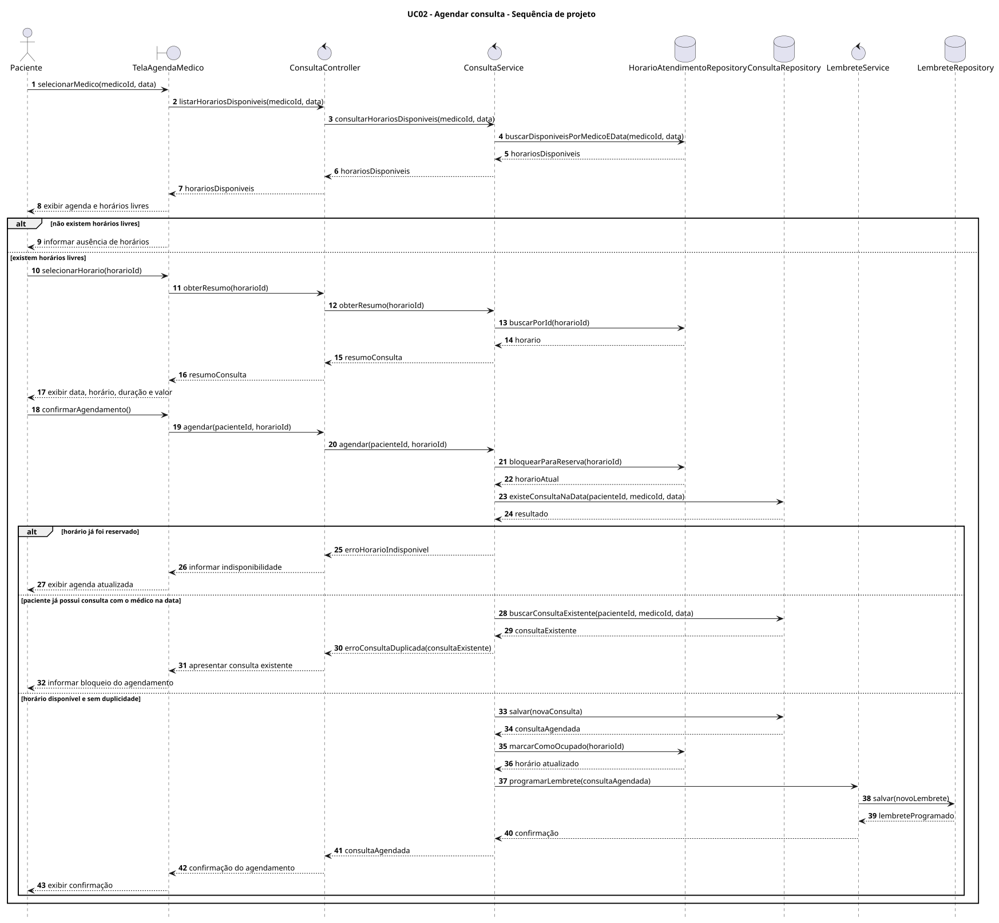
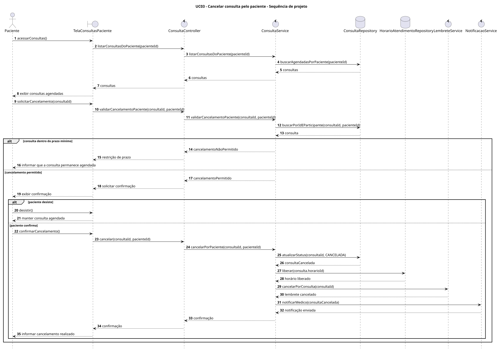
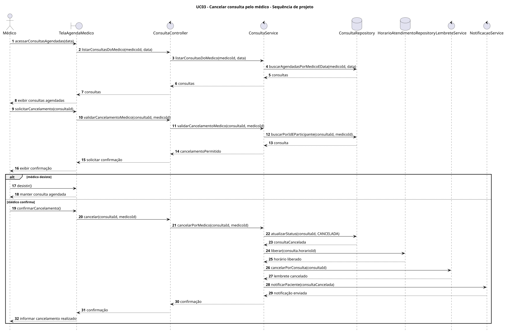
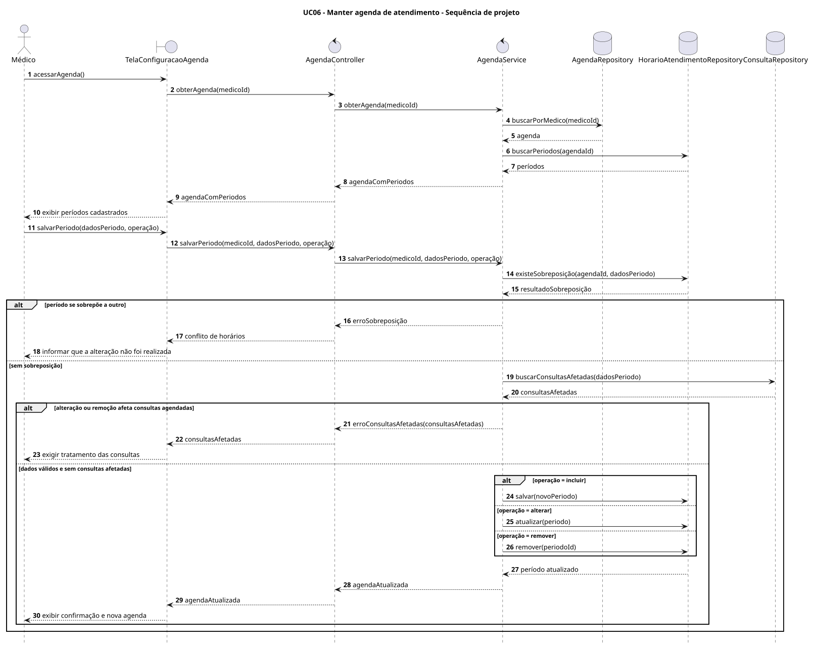
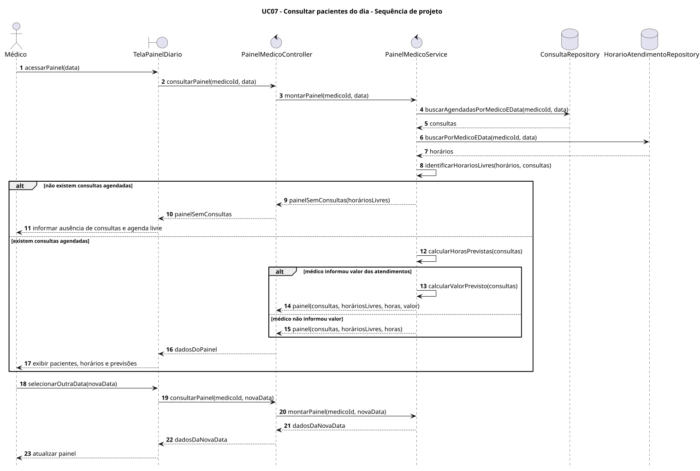

Diagramas de Sequência de Projeto
Sistema de Agendamento de Consultas - Grupo 24
Visualização preliminar baseada em uma arquitetura web genérica em camadas. Os nomes das classes deverão ser alinhados ao diagrama de classes de projeto do grupo.
UC02 - Agendar consulta

UC03 - Cancelar consulta pelo paciente

UC03 - Cancelar consulta pelo médico

UC06 - Manter agenda de atendimento

UC07 - Consultar pacientes do dia
